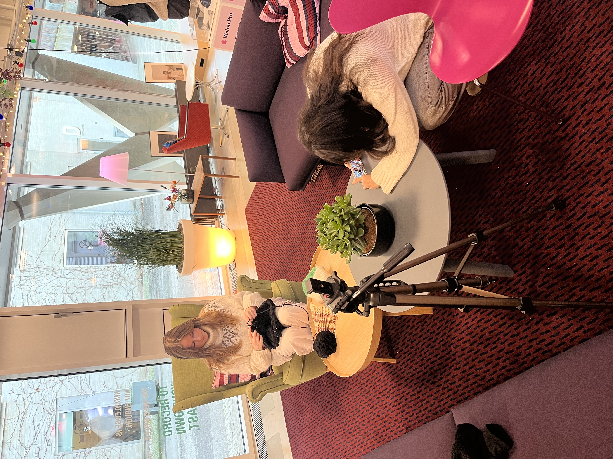
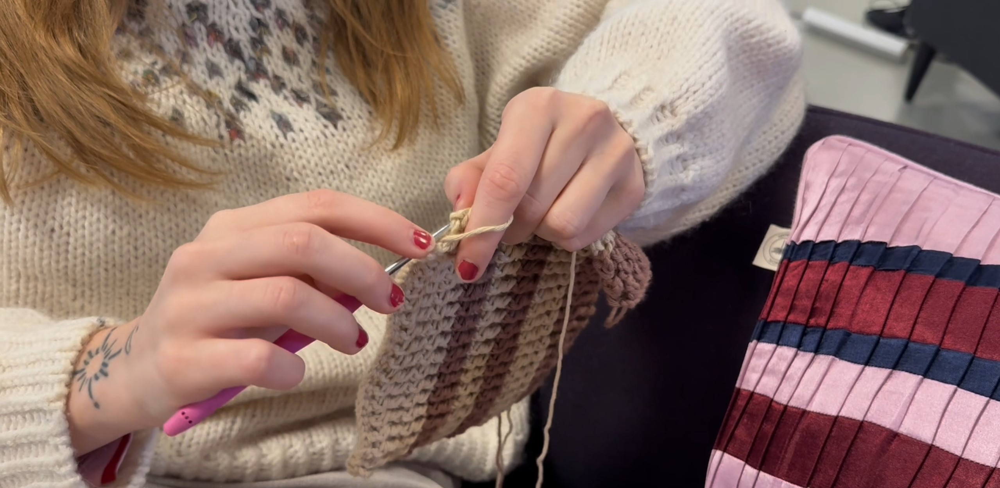
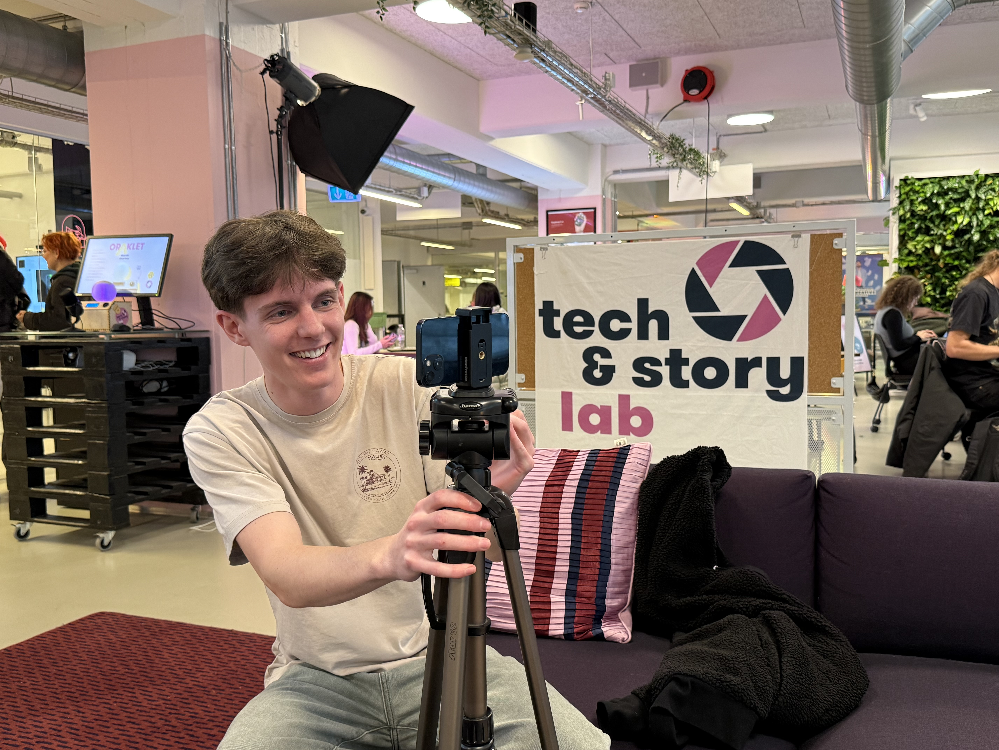

Emmelys Passion for Hækling og Strik
Fra barndommens hygge med familien til bøllehatte på Roskilde Festival.
Emmely er 22 år og har elsket at hækle og strikke, siden hun var helt lille. Inspireret af sin mor og mormor, der ofte sad med garn og pinde, har hun gjort det til en livslang hobby. For hende er det ikke bare en kreativ udfoldelse, men også en måde at finde ro og fordybelse i en travl hverdag. En af hendes stolteste øjeblikke var, da hun hæklede unikke bøllehatte til sin camp på Roskilde Festival – en oplevelse, der skabte glæde og fællesskab blandt venner.
Galleri


